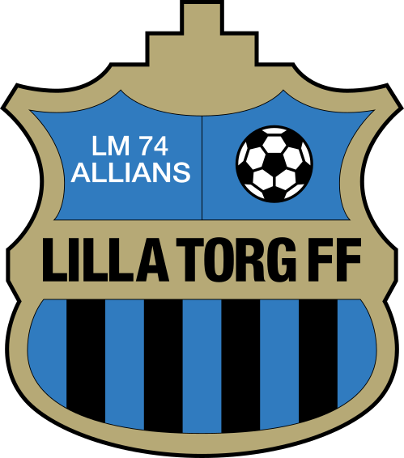

LILLA TORG FF
MATCHVid sidlinjen.
REDO FÖR AVSPARKPÅ DIN ENHET
Lilla Torg FF
Utmanare
0:0
MATCHTID
00:00
Pausa klockan vid halvlek. Fortsätt när spelet börjar.
Matchens mål 0
MÅLLOGGTidigare matcher
0 MATCHERMatchen sparas här när du väljer Spara & ny match.
Förbereder offline-stöd…
Lägg appen på iPhones hemskärm
Öppna den publicerade adressen i Safari. Tryck på Dela och välj Lägg till på hemskärmen. Öppna appen en gång med internet och vänta tills offline-stödet är klart.